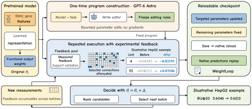
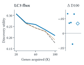
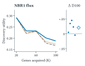
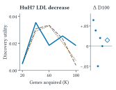
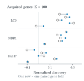
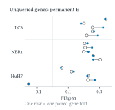
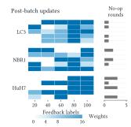

WeightLoop: Weight-Space Programming with Experimental Feedback
none \settopmatterprintacmref=false,printccs=false,printfolios=true \acmDOI \acmISBN
无 \settopmatterprintacmref=false,printccs=false,printfolios=true \acmDOI \acmISBN
Abstract摘要
Weight-space programming (WSP) shows that language models can reason about and rewrite neural network weights; recursive self-improvement (RSI) motivates feedback-driven improvement. Models guiding experiments receive concrete feedback: completed assays reveal prediction errors and inform what to test next. We introduce WeightLoop, a framework that turns experimental feedback into persistent updates to deployed predictors. GPT-6 Astra inspects a task specification and the model implementation, then writes a bounded, reusable parameter-editing program. As new measurements arrive, the program identifies prediction discrepancies, validates candidate edits using observed outcomes, and writes the selected changes back to the original model. The editor remains fixed while the predictor evolves, enabling repeated updates without further LLM calls or gradient retraining while preserving the original inference interface. In offline replay, targeted edits improve mean ranking utility in seven of eight endpoint–budget settings (all eight versus random edits) and mean final discovery across three sequential tasks. WeightLoop connects WSP with an RSI-inspired improvement loop, making experimental evidence a direct driver of model change and subsequent decisions.
权重空间编程（WSP）表明，语言模型能够对神经网络权重进行推理和重写；递归自我改进（RSI）则为反馈驱动的改进提供了启发。指导实验的模型会获得具体反馈：已完成的测定揭示预测误差，并为下一步测试内容提供依据。我们提出 WeightLoop，这是一个将实验反馈转化为对已部署预测器的持久更新的框架。GPT-6 Astra 检查任务规范和模型实现，然后编写一个有界、可复用的参数编辑程序。随着新测量结果的到来，该程序识别预测偏差，利用观测结果验证候选编辑，并将选定的更改写回原始模型。预测器不断演变，而编辑器保持固定，从而在保留原始推理接口的同时，无需进一步调用 LLM 或进行梯度重训练即可反复更新。在离线回放中，定向编辑在八种终点指标–预算设置中的七种设置下提高了平均排序效用（与随机编辑相比，全部八种设置均有所提高），并提高了三项序贯任务中的平均最终发现量。WeightLoop 将 WSP 与受 RSI 启发的改进循环相结合，使实验证据成为模型变化及后续决策的直接驱动力。
Key words and phrases:关键词和短语：
1. Introduction1. 引言
An experiment does more than test a prediction: it produces evidence that can change the next decision. In experimental decision-making Settles (2009); King et al. (2009); Roohani et al. (2025), a predictor ranks candidate interventions, but their effects become known only after measurement. Historical data provide reusable knowledge, yet a new objective may have only a few dozen functional measurements. These results can expose task-specific errors in an otherwise useful model. The challenge is therefore not only to evaluate predictions, but to incorporate evidence into the deployed predictor so subsequent decisions reflect what has been learned. Cellular perturbation research Cui et al. (2024); Roohani et al. (2023) and virtual cells Bunne et al. (2024) provide a demanding example.
实验不仅检验预测，还会产生能够改变下一步决策的证据。在实验决策中 Settles (2009); King et al. (2009); Roohani et al. (2025)，预测器对候选干预措施进行排序，但只有经过测量才能获知其效果。历史数据提供了可复用的知识，但对于一个新目标，可能仅有几十次功能测量。这些结果能够揭示一个原本有用的模型中存在的任务特定误差。因此，挑战不仅在于评估预测，还在于将证据纳入已部署的预测器，使后续决策反映已学到的知识。细胞扰动研究 Cui et al. (2024); Roohani et al. (2023) 和虚拟细胞 Bunne et al. (2024) 提供了一个具有挑战性的实例。
From model editing to weight-space programming从模型编辑到权重空间编程
Model-editing research studies targeted corrections to neural parameters Sinitsin et al. (2020); Mitchell et al. (2022); De Cao et al. (2021); Meng et al. (2022); Meng et al. (2023). Takehi et al. introduced weight-space programming (WSP), demonstrating language models interpreting and rewriting weights according to natural-language objectives in specified settings Takehi et al. (2026). This opens a possibility: can an LLM program how a deployed model should change when experimental evidence arrives? Beyond producing one parameter correction, such a program could connect successive measurements to the model’s future behavior.
模型编辑研究探讨对神经网络参数进行定向修正 Sinitsin et al. (2020); Mitchell et al. (2022); De Cao et al. (2021); Meng et al. (2022); Meng et al. (2023)。Takehi et al. 提出了权重空间编程（WSP），展示了语言模型在特定设置下根据自然语言目标解释和重写权重的能力 Takehi et al. (2026)。这带来了一种可能性：LLM 能否通过编程规定已部署模型在收到实验证据时应如何变化？这样的程序不仅能够生成一次参数修正，还可以将连续获得的测量结果与模型未来的行为联系起来。
Where the improvement loop lives改进循环作用于何处
Recursive self-improvement (RSI) motivates systems such as STOP, whose improvement program revises itself Zelikman et al. (2024). In WeightLoop, the sequence is concrete: the LLM writes an editor once; each returned assay batch lets that editor revise the predictor; the revised predictor recommends the next batch. The editor code and LLM remain fixed during this loop. New measured outcomes determine the parameter changes, without another LLM call or gradient retraining. The scientific predictor is the object of this improvement loop.
递归自我改进（RSI）启发了 STOP 等系统，其改进程序会修订自身 Zelikman et al. (2024)。在 WeightLoop 中，这一过程是具体的：LLM 只编写一次编辑器；每批返回的测定结果都使该编辑器能够修订预测器；修订后的预测器则推荐下一批实验。在这一循环中，编辑器代码和 LLM 保持固定。新的实测结果决定参数变化，无需再次调用 LLM 或进行梯度重训练。科学预测器是这一改进循环的作用对象。
The WeightLoop workflowWeightLoop 工作流程
Given a task objective and model, GPT-6 Astra OpenAI (2026) identifies task-relevant mutable parameters and writes a bounded editing program. When feedback arrives, the program evaluates discrepancies between predictions and measurements, constructs candidate changes, and selects a validated update. Changes are written into the checkpoint, which reloads through its original inference interface. The updated predictor guides the next decision, and the process repeats as measurements arrive (Figure 1). Feedback therefore changes the model itself, beyond adjusting one recommendation list.
给定任务目标和模型后，GPT-6 Astra OpenAI (2026) 识别与任务相关的可变参数，并编写一个有界的编辑程序。反馈到来时，该程序评估预测与测量结果之间的偏差，构造候选更改，并选择经过验证的更新。更改被写入检查点，该检查点通过其原始推理接口重新加载。更新后的预测器指导下一步决策，随着测量结果不断到来，这一过程反复进行（图 1）。因此，反馈会改变模型本身，而不只是调整一份推荐列表。
We study two complementary settings: single-round ranking and sequential discovery. Cellular growth, migration, autophagy, and LDL-uptake measurements supply concrete feedback across objectives. Here, biology supplies measurable outcomes for testing a reusable editing workflow. Neural, linear, and tree-based predictors offer different parameter structures for the same workflow. Recorded measurements enable offline replay to test whether updates improve subsequent decisions and remain usable after checkpoint writeback and reload. Together, these experiments demonstrate how WSP can turn returned measurements into an ongoing source of model improvement.
我们研究了两种互补的设置：单轮排序和序贯发现。细胞生长、迁移、自噬和 LDL 摄取的测量结果为不同目标提供了具体反馈。在这里，生物学提供了可测量的结果，用于检验可复用的编辑工作流程。神经网络预测器、线性预测器和基于树的预测器为同一工作流程提供了不同的参数结构。记录的测量结果支持离线回放，以检验更新能否改善后续决策，以及在检查点写回并重新加载后是否仍然可用。这些实验共同展示了 WSP 如何将返回的测量结果转化为模型持续改进的来源。

Figure 1. WeightLoop separates one-time program construction from repeated execution with experimental feedback. The LLM builds a reusable editor; returned measurements validate parameter changes, followed by model save, reload, and the next decision. Weight values and ranking gains illustrate a HepG2 example.
图 1：WeightLoop 将一次性的程序构建与利用实验反馈的重复执行分离。LLM 构建一个可复用的编辑器；返回的测量结果用于验证参数更改，随后进行模型保存、重新加载和下一次决策。权重值和排序增益以 HepG2 为例进行展示。






Figure 2. Measured feedback changes discovery and prediction. (a–c) Complete acquisition curves and paired final $\Delta D_{100}$; diamonds are means. HuH7 has an expanded scale. (d,e) All paired gene-fold scores for $D_{100}$ and permanent-set $\mathrm{BU}@50$. (f) Modified-weight counts, including no-ops; fold order 0–4 is shared. The last update affects only permanent-set prediction. Folds partition the same studies.
图 2：测量反馈改变了发现与预测。(a–c) 完整的采集曲线和配对的最终 $\Delta D_{100}$；菱形表示均值。HuH7 使用了扩展的刻度范围。(d,e) $D_{100}$ 和永久集 $\mathrm{BU}@50$ 的所有配对基因–折得分。(f) 修改的权重数量，包括无操作；各图共用 0–4 的折顺序。最后一次更新仅影响永久集预测。各折对同一组研究进行划分。
2. WeightLoop2. WeightLoop
2.1. Fixed editor, updating predictor2.1. 固定编辑器，更新预测器
GPT-6 Astra OpenAI (2026) constructs the editor from the task objective, model implementation, parameter structure, and available feedback. It produces an executable editor specifying mutable parameters, candidate updates, validation rules, and model saving. The editor uses measured support to update the predictor through repeated numerical execution, with no additional LLM calls. For original parameters $\theta_{0}$, editor $\mathcal{E}_{\mathcal{I}}$, and accumulated support $S_{t}=\{(g_{i},x_{i},y_{i})\}$ recording identities, inputs, and measured outcomes,
GPT-6 Astra OpenAI (2026) 根据任务目标、模型实现、参数结构和可用反馈构建编辑器。它生成一个可执行的编辑器，指定可修改参数、候选更新、验证规则和模型保存方式。编辑器利用实测支持数据，通过重复的数值执行更新预测器，无需额外调用 LLM。对于原始参数 $\theta_{0}$、编辑器 $\mathcal{E}_{\mathcal{I}}$，以及记录标识、输入和实测结果的累积支持集 $S_{t}=\{(g_{i},x_{i},y_{i})\}$，
where $\mathcal{D}$ applies the remaining candidates, budget, and decision rule; $\Delta_{t,j}=0$ outside $\mathcal{I}$. Updates are constructed on support-training records, selected on support-validation records, then reconstructed on all support. No qualifying improvement gives $\Delta_{t}=0$. Each update starts from $\theta_{0}$, so patches do not compound. Only observed outcomes enter support; outcomes of unmeasured candidates and the permanent test set are excluded.
其中，$\mathcal{D}$ 应用剩余候选项、预算和决策规则；在 $\mathcal{I}$ 之外，$\Delta_{t,j}=0$。更新基于支持集训练记录构建，在支持集验证记录上选择，随后基于全部支持集重新构建。若没有符合条件的改进，则 $\Delta_{t}=0$。每次更新均从 $\theta_{0}$ 开始，因此补丁不会累积。支持集仅纳入已观测的结果；未测量候选项的结果和永久测试集均被排除。
A concrete program-design choice一项具体的程序设计选择
The neural editor exposes the functional output weights as its update interface. The model code separates a reusable molecular encoder from a linear functional readout: changing one readout weight alters that feature’s contribution while preserving both the representation and the RNA auxiliary branches. This structure also makes a candidate change exactly computable from cached activations, so the editor can test individual connections without backpropagation. Its diagnostic asks whether weakening a connection improves the ordering of measured genes; its validation combines a pairwise ranking loss with top-budget utility. For coefficient and leaf-value updates, the implemented objective is instead residual prediction error. Thus the program construction ties the mutable interface and validation criterion to the model structure and task objective. Once those choices are encoded, measurements determine the affected coordinates and accepted parameter values on each execution.
神经模型编辑器将功能输出权重作为更新接口。模型代码将可复用的分子编码器与线性功能读出分离：更改一个读出权重会改变相应特征的贡献，同时保留表征和 RNA 辅助分支。这一结构还使候选更改能够根据缓存的激活精确计算，因此编辑器无需反向传播即可测试单个连接。其诊断旨在判断削弱某个连接是否会改善已测量基因的排序；其验证结合了成对排序损失与预算内排名前列的效用。对于系数和叶节点值的更新，所实现的目标则是残差预测误差。因此，程序构建将可修改接口和验证准则与模型结构及任务目标相联系。一旦这些选择被编码，每次执行中受影响的坐标和被接受的参数值便由测量结果决定。
2.2. Neural output-weight editing2.2. 神经模型输出权重编辑
A ReLU MLP encodes static GO The Gene Ontology Consortium (2023), scGPT Cui et al. (2024), and MAP-KG features, with availability indicators, as $h_{\phi}(x_{g})\in\mathbb{R}^{128}$. Its original fit used functional labels and historical RNA auxiliary supervision; candidate-specific perturbation RNA is not an inference input. The functional prediction in assay units is
一个 ReLU MLP 将静态 GO The Gene Ontology Consortium (2023)、scGPT Cui et al. (2024) 和 MAP-KG 特征连同可用性指示变量编码为 $h_{\phi}(x_{g})\in\mathbb{R}^{128}$。其初始拟合使用了功能标签和历史 RNA 辅助监督；候选项特异的扰动 RNA 不作为推理输入。以测定单位表示的功能预测为
Only the 128 entries of $w$ are editable. The encoder, bias, input transform, original 25-label output scaler $(\mu_{y},s_{y})$, RNA head, and source parameters remain fixed; the edit reweights the existing representation.
仅 $w$ 的 128 个元素可编辑。编码器、偏置、输入变换、原始的 25 标签输出缩放器 $(\mu_{y},s_{y})$、RNA 头和源参数均保持固定；编辑对现有表征重新赋权。
Diagnose, select, and write诊断、选择与写入
Feedback consists of newly measured gene effects. If a hidden feature gives high scores to genes with weak measured effects, attenuating its output connection can reduce ranking errors. The editor tests this possibility against the observed measurements. Using the original 25-label output scaler, let $p_{i}=(f_{\theta}(g_{i})-\mu_{y})/s_{y}$ and $\tilde{y}_{i}=(y_{i}-\mu_{y})/s_{y}$. Let $a_{ij}=|\tilde{y}_{i}-\tilde{y}_{j}|$ and $s_{ij}=\operatorname{sgn}(\tilde{y}_{i}-\tilde{y}_{j})$. The support loss is
反馈由新测得的基因效应组成。如果某个隐藏特征为实测效应较弱的基因赋予高分，衰减其输出连接便可能减少排序错误。编辑器依据已观测的测量结果检验这一可能性。使用原始的 25 标签输出缩放器，令 $p_{i}=(f_{\theta}(g_{i})-\mu_{y})/s_{y}$，且 $\tilde{y}_{i}=(y_{i}-\mu_{y})/s_{y}$。令 $a_{ij}=|\tilde{y}_{i}-\tilde{y}_{j}|$，且 $s_{ij}=\operatorname{sgn}(\tilde{y}_{i}-\tilde{y}_{j})$。支持集损失为
The logistic comparison follows learning-to-rank formulations Burges et al. (2005). We cache $h_{i}$ and probe each connection by halving $w_{j}$, which changes standardized predictions by exactly $-0.5w_{j}h_{ij}$. Its diagnostic gain is the resulting decrease in $\mathcal{L}$. The top positive gains above $10^{-12}$ determine at most $k$ coordinates $S_{k}$ for six update settings: $k\in\{4,8,16\}$ and $\alpha\in\{0.25,0.5\}$,
该逻辑斯蒂比较遵循学习排序的表述 Burges et al. (2005)。我们缓存 $h_{i}$，并通过将 $w_{j}$ 减半来探测每个连接，这使标准化预测值精确变化 $-0.5w_{j}h_{ij}$。其诊断增益为由此带来的 $\mathcal{L}$ 的下降量。大于 $10^{-12}$ 的最大正增益确定至多 $k$ 个坐标 $S_{k}$，对应六种更新设置：$k\in\{4,8,16\}$ 和 $\alpha\in\{0.25,0.5\}$，
Equal-label pairs have zero weight; an all-tied set has zero loss. Diagnostic and update ties follow fixed orders. Three identity-based support folds select the lowest mean validation loss subject to non-decreasing mean validation utility ($\mathrm{BU}@10$ for single-round ranking). Each fold diagnoses coordinates using only its training genes. The accepted update is rebuilt on all feedback and written to the model’s output-weight vector. Its effect is gene-specific: $\delta f(g)=s_{y}\sum_{j}\delta w_{j}h_{j}(x_{g})$, so it can change ordering while preserving the learned representation.
标签相同的样本对权重为零；标签全部相同的集合损失为零。诊断和更新中的并列情况均按固定顺序处理。基于基因身份划分的三个支持集折在平均验证效用不下降的约束下，选择平均验证损失最低的设置（单轮排序使用 $\mathrm{BU}@10$）。每一折仅使用其训练基因来诊断坐标。通过验证的更新使用全部反馈重新构建，并写入模型的输出权重向量。其影响具有基因特异性：$\delta f(g)=s_{y}\sum_{j}\delta w_{j}h_{j}(x_{g})$，因此它能够在保留已学习表征的同时改变排序。
Matched controls permute the same diagnostic update across coordinates. For a given support set and update setting, they preserve the number and norm of changes and receive the same six-setting validation opportunity. Single-round ranking uses three fixed permutations; sequential discovery uses one and may acquire different subsequent support.
匹配对照将同一诊断更新在不同坐标之间进行置换。对于给定的支持集和更新设置，这些对照保持改动的数量和范数不变，并获得相同的六种设置验证机会。单轮排序使用三种固定置换；序贯发现使用一种置换，并且可能在后续获取不同的支持集。
2.3. Coefficient and leaf-value editing2.3. 系数与叶节点值编辑
With standardized feedback $\tilde{y}_{i}$ and original prediction $p_{0i}$, define residuals $r_{i}=\tilde{y}_{i}-p_{0i}$. Ridge Hoerl and Kennard (1970) adds $\delta w=(X_{c}^{\top}X_{c}+\lambda I)^{-1}X_{c}^{\top}r_{c}$ and $\delta b=\bar{r}-\bar{x}^{\top}\delta w$, where centering uses the fitting support, $\lambda=m\gamma$, and $\gamma\in\{0.1,1,10,100\}$. XGBoost Chen and Guestrin (2016) retains all 300 tree structures and revises each supported prediction leaf by $v^{\prime}_{\ell}=v_{\ell}+\alpha\sum_{i\in\ell}r_{i}/[300(n_{\ell}+5)]$, with $\alpha\in\{0.1,0.25,0.5\}$. Here $m$ is the support size; $n_{\ell}$ counts support records reaching leaf $\ell$. Unsupported leaves remain unchanged. Three-fold support MSE selects these updates; no improvement retains the original model. These supervised analytical operators change coefficients or native leaf values while retaining input/output transforms and inference code.
给定标准化反馈 $\tilde{y}_{i}$ 和原始预测 $p_{0i}$，定义残差 $r_{i}=\tilde{y}_{i}-p_{0i}$。岭回归 Hoerl and Kennard (1970) 添加 $\delta w=(X_{c}^{\top}X_{c}+\lambda I)^{-1}X_{c}^{\top}r_{c}$ 和 $\delta b=\bar{r}-\bar{x}^{\top}\delta w$，其中，中心化使用拟合所用的支持集，$\lambda=m\gamma$，且 $\gamma\in\{0.1,1,10,100\}$。XGBoost Chen and Guestrin (2016) 保留全部 300 棵树的结构，并按 $v^{\prime}_{\ell}=v_{\ell}+\alpha\sum_{i\in\ell}r_{i}/[300(n_{\ell}+5)]$ 修订每个有支持样本的预测叶节点，其中 $\alpha\in\{0.1,0.25,0.5\}$。这里，$m$ 为支持集大小；$n_{\ell}$ 为到达叶节点 $\ell$ 的支持记录数。没有支持样本的叶节点保持不变。通过支持集上的三折均方误差选择这些更新；若无改善，则保留原始模型。这些有监督解析算子改变系数或原生叶节点值，同时保留输入/输出变换和推理代码。
Table 1. Single-round ranking: all eight endpoint–budget settings, mean $\mathrm{BU}$ over five folds and two seeds. Rand.: three-control mean; Full: original 100-label fit.
表 1：单轮排序：全部八种终点–预算设置，报告五折和两个种子上的平均 $\mathrm{BU}$。随机：三个对照的均值；完整：原始的 100 标签拟合模型。
| Endpoint 终点 | $B$ | Orig. 原始 | Rand. 随机 | Edited 编辑后 | Full 完整 |
| HepG2 growth HepG2 生长 | 20 | 0.5239 | 0.5270 | 0.5419 | 0.6254 |
| HepG2 growth HepG2 生长 | 50 | 0.5208 | 0.5309 | 0.5421 | 0.6025 |
| Jurkat growth Jurkat 生长 | 20 | 0.5223 | 0.5270 | 0.5344 | 0.5993 |
| Jurkat growth Jurkat 生长 | 50 | 0.5175 | 0.5304 | 0.5355 | 0.6038 |
| HL60 proliferation HL60 增殖 | 20 | 0.2251 | 0.2239 | 0.2254 | 0.2201 |
| HL60 proliferation HL60 增殖 | 50 | 0.2523 | 0.2590 | 0.2665 | 0.2632 |
| HL60 migration HL60 迁移 | 20 | -0.0171 | -0.0246 | -0.0147 | 0.0832 |
| HL60 migration HL60 迁移 | 50 | 0.0103 | 0.0051 | 0.0087 | 0.0581 |
3. Evaluation and Results3. 评估与结果
We evaluate single-round ranking and sequential discovery using public functional screens. Editor design used DepMap experiments; the resulting rules were fixed for HL60 and sequential evaluation. Each prediction or batch choice precedes access to its evaluation outcomes. Tables present the complete endpoint–budget grid under matched feedback budgets.
我们使用公开的功能筛选数据评估单轮排序和序贯发现。编辑器设计使用了 DepMap 实验；由此得到的规则在 HL60 和序贯评估中保持固定。每次预测或批次选择均在获取其评估结果之前完成。各表在匹配的反馈预算下呈现完整的终点–预算组合。
3.1. Single-round ranking3.1. 单轮排序
The single-round experiment asks whether one feedback update improves subsequent ranking. It covers HepG2/Jurkat negative Chronos effects from DepMap 24Q4 Broad DepMap (2024); Dempster et al. (2021), HL60 proliferation, and serum-gradient migration inhibition Belliveau et al. (2023). Five gene partitions and two seeds per endpoint give 40 initial $n=25$ models. Feedback is the 75 genes in the corresponding $n=100$ training set but outside the initial 25; query genes are excluded from both. All six arms share the query pool. The existing $n=100$ reference and initial models were each fitted for 1600 updates; editing maintains the $n=25$ model using the additional measurements.
单轮实验考察一次反馈更新能否改善后续排序。实验涵盖 DepMap 24Q4 中 HepG2/Jurkat 的负向 Chronos 效应 Broad DepMap (2024); Dempster et al. (2021)、HL60 增殖以及血清梯度下的迁移抑制 Belliveau et al. (2023)。每个终点采用五种基因划分和两个种子，共得到 40 个初始 $n=25$ 模型。反馈来自对应 $n=100$ 训练集中初始 25 个基因之外的 75 个基因；查询基因不包含在这两个集合中。全部六个实验组共享同一查询池。现有的 $n=100$ 参考模型和初始模型均经过 1600 次更新拟合；编辑则利用新增测量结果维护 $n=25$ 模型。
For budget $B=20,50$, let $d_{r}$ be $1/\log_{2}(r+1)$ normalized over all $B$ positions. We report
对于预算 $B=20,50$，令 $d_{r}$ 为在全部 $B$ 个位置上归一化后的 $1/\log_{2}(r+1)$。我们报告
where zero is the same-pool random expectation and one the oracle. Paired summaries average seeds within each gene partition of a study.
其中，零表示同一池中随机选择的期望值，一表示理想最优值。配对汇总先对每项研究的各基因划分内的种子结果取平均。
Edited utility exceeds Random in all eight settings and improves over Original in seven (Table 1). HepG2 improves in all five paired folds at both budgets, connecting the mean gains to consistent within-task improvements.
编辑后的效用在全部八种设置中均高于随机对照，并在其中七种设置中优于原始模型（表 1）。在两种预算下，HepG2 的全部五个配对折均有改善，表明平均增益对应于任务内一致的改善。
Tracing a recommendation追踪一项推荐
In the HepG2 example of Figure 1, the editor selects $k=16,\alpha=0.5$: validation loss falls $0.54235\to 0.53837$ and $\mathrm{BU}@10$ rises $0.43363\to 0.47502$. Figure 1 shows two realized weight changes. Top20 retains 19 genes, adds SNRPB, and removes GEMIN2; query $\mathrm{BU}@20$ rises $0.604554\to 0.621258$ ($\mathrm{BU}@50$: $0.559769\to 0.560715$).
在图 1 的 HepG2 示例中，编辑器选择 $k=16,\alpha=0.5$：验证损失下降 $0.54235\to 0.53837$，$\mathrm{BU}@10$ 上升 $0.43363\to 0.47502$。图 1 展示了两项实际发生的权重变化。Top20 保留 19 个基因，加入 SNRPB，并移除 GEMIN2；查询集上的 $\mathrm{BU}@20$ 上升 $0.604554\to 0.621258$（$\mathrm{BU}@50$：$0.559769\to 0.560715$）。
3.2. Sequential discovery3.2. 序贯发现
Sequential discovery reuses 15 initial 25-label models for LC3/NBR1 autophagic flux Shoemaker et al. (2019) and reduced LDL uptake in HuH7 cells with lipoprotein-rich medium Emmer et al. (2021): three endpoints, five gene folds, and one seed. Unchanged, targeted-edit, and permuted-edit policies each acquire five batches of 20 genes. Each batch is chosen before its measurements become available. Later edits use only that policy’s acquired feedback; the initial 25 labels influence $\theta_{0}$ but do not reenter $S_{t}$. Each patch is reconstructed from $\theta_{0}$, with a validation guard at $B=\min(5,n_{\mathrm{validation}}-1)$.
序贯发现复用 15 个初始的 25 标签模型，涉及 LC3/NBR1 自噬通量 Shoemaker et al. (2019)，以及富含脂蛋白培养基条件下 HuH7 细胞的 LDL 摄取降低 Emmer et al. (2021)：共三个终点、五个基因折和一个种子。保持不变、定向编辑和置换编辑三种策略各获取五批基因，每批 20 个。每一批均在其测量结果可用之前选定。后续编辑仅使用相应策略获取的反馈；初始 25 个标签影响 $\theta_{0}$，但不会再次进入 $S_{t}$。每个补丁均从 $\theta_{0}$ 重新构建，并在 $B=\min(5,n_{\mathrm{validation}}-1)$ 处设置验证保护条件。
For acquired set $A_{K}$ from candidate pool $C$, discovery is $D_{K}=(\sum_{g\in A_{K}}y_{g}-K\bar{y}_{C})/(\sum_{g\in\mathrm{Top}_{K}(C)}y_{g}-K\bar{y}_{C})$. Its oracle normalization changes with $K$, so policies are compared at the same acquisition count. Permanent-set predictions are evaluated after all 45 trajectories finish, separately from discovery in the queried pool.
对于从候选池 $C$ 中获取的集合 $A_{K}$，发现指标为 $D_{K}=(\sum_{g\in A_{K}}y_{g}-K\bar{y}_{C})/(\sum_{g\in\mathrm{Top}_{K}(C)}y_{g}-K\bar{y}_{C})$。其预言机归一化项随 $K$ 变化，因此在获取数量相同的情况下比较各策略。在全部 45 条轨迹结束后，评估永久集上的预测，并将其与查询池中的发现指标分开评估。
Edited selection improves mean $D_{100}$ over both controls in all three tasks, with 4/5, 4/5, and 3/5 positive paired folds (Table 2). Identical first batches locate these differences in later feedback-driven selections. Permanent-set $\mathrm{BU}@50$ increases by 0.0254, 0.0098, and 0.0096 (Figure 2e). Of 75 targeted updates, 56 change weights, at most 16 each; the final update serves only permanent-set prediction.
在全部三项任务中，经编辑的选择策略相较于两种对照均提高了平均 $D_{100}$，配对折中差值为正的折数分别为 4/5、4/5 和 3/5（表 2）。首批选择完全相同，表明这些差异源自后续由反馈驱动的选择。永久集上的 $\mathrm{BU}@50$ 分别提高了 0.0254、0.0098 和 0.0096（图 2e）。在 75 次定向更新中，56 次改变了权重，每次最多改变 16 个；最后一次更新仅用于永久集预测。
The paired panels connect these aggregate improvements to actual model updates. Discovery measures the value of genes selected for assay, whereas permanent-set utility measures ranking of genes that never supplied feedback. Their joint mean improvement links the selection loop to predictions beyond the acquired set. The edit-count panel makes the mechanism visible: individual feedback batches can retain the original model or select different numbers of coordinates. Thus the fixed program translates changing evidence into adaptive model states, rather than applying the same perturbation after every batch.
这些配对面板将上述总体改进与实际模型更新联系起来。发现指标衡量所选检测基因的价值，而永久集效用衡量对从未提供反馈的基因的排序能力。两者的均值均有所提升，将选择循环与已获取集合之外的预测联系起来。编辑数量面板直观呈现了这一机制：各批反馈既可以保留原始模型，也可以选择不同数量的坐标。因此，该固定程序将不断变化的证据转化为自适应模型状态，而非在每批反馈之后施加相同的扰动。
Table 2. Sequential discovery: mean $D_{100}$ from the same initial models. $\Delta$: edited minus original; Pos.: positive paired folds. HuH7: LDL decrease, lipoprotein-rich conditions.
表 2. 序贯发现：从相同初始模型出发得到的平均 $D_{100}$。$\Delta$：编辑后减去原始值；正值折数：差值为正的配对折数。HuH7：富含脂蛋白条件下的 LDL 降低。
| Task 任务 | Original 原始 | Permuted 置换 | Edited 编辑后 | $\Delta$ | Pos. 正值折数 |
| LC3 | 0.1757 | 0.1894 | 0.2091 | +0.0334 | 4/5 |
| NBR1 | 0.1671 | 0.1735 | 0.1878 | +0.0207 | 4/5 |
| HuH7 | 0.0038 | 0.0073 | 0.0185 | +0.0147 | 3/5 |
3.3. Coefficient and leaf interfaces3.3. 系数与叶节点接口
Ridge and XGBoost reuse the two DepMap cells, five folds, and one seed (20 models), with 25 initial labels and 75 feedback genes. Here support MSE selects updates and query MSE is primary; ranking is secondary. Coefficient updates reduce MSE by 10.0% and 13.0%, and leaf updates by 2.4% and 2.6% (Table 3); all four mean $\mathrm{BU}@20$ values also increase. Parameter edits also improve MSE over same-feedback affine calibration in three of four model–cell settings.
Ridge 和 XGBoost 沿用两个 DepMap 细胞系、五折划分和一个随机种子（20 个模型），使用 25 个初始标签和 75 个反馈基因。此处根据支持集 MSE 选择更新，并以查询集 MSE 为主要指标；排序为次要指标。系数更新分别使 MSE 降低了 10.0% 和 13.0%，叶节点更新分别使其降低了 2.4% 和 2.6%（表 3）；四个平均 $\mathrm{BU}@20$ 值也均有提高。在四种模型与细胞系组合设置中的三种中，参数编辑的 MSE 也优于使用相同反馈进行的仿射校准。
Table 3. All coefficient/leaf settings: original-unit MSE and edited-minus-original $\Delta\mathrm{BU}@20$. Aff.: feedback-fitted affine calibration; Full: 100-label fit. H=HepG2, J=Jurkat.
表 3. 所有系数/叶节点设置：原始单位下的 MSE，以及编辑后减去原始值的 $\Delta\mathrm{BU}@20$。仿射：基于反馈拟合的仿射校准；完整：使用 100 个标签拟合。H=HepG2，J=Jurkat。
| Model 模型 | Orig. 原始 | Edited 编辑后 | Aff. 仿射 | Full 完整 | $\Delta\mathrm{BU}@20$ |
| Ridge/H | 0.3023 | 0.2720 | 0.2844 | 0.2705 | +0.1086 |
| Ridge/J | 0.3239 | 0.2817 | 0.3110 | 0.2852 | +0.0586 |
| XGB/H | 0.3218 | 0.3140 | 0.3188 | 0.2807 | +0.0069 |
| XGB/J | 0.3346 | 0.3258 | 0.3183 | 0.2957 | +0.0013 |
Persistent model updates持久化模型更新
In a deployed predictor with 3,604,535 network parameters, the HepG2 update changes only 16 weights (0.00044%) and reproduces all 914 edited predictions exactly after native checkpoint reload. These are 16 of the 128 functional output weights; the network count includes the encoder and RNA head. Both remain unchanged, as do the separately stored source adapters. Reordered queries also reproduce all saved scores, and a single-gene inference check passes with the original input/output transforms. The update therefore persists in the predictor and serves subsequent queries through the original inference interface.
在具有 3,604,535 个网络参数的已部署预测器中，HepG2 更新仅改变了 16 个权重（0.00044%），并且在通过原生方式重新加载检查点后，精确复现了全部 914 个编辑后预测。这些权重是 128 个功能输出权重中的 16 个；网络参数总数包括编码器和 RNA 头。两者均保持不变，单独存储的源适配器也保持不变。重新排列查询顺序也能复现所有已保存的评分，并且使用原始输入/输出变换的单基因推理检查亦已通过。因此，该更新持久保留在预测器中，并通过原始推理接口为后续查询提供服务。
4. Conclusion4. 结论
WeightLoop converts experimental feedback into persistent model updates. A fixed, LLM-constructed editor selects parameter changes from observed measurements, and the updated predictor guides the next decision. Ranking, sequential acquisition, and multiple parameter interfaces demonstrate how WSP connects accumulating scientific evidence to future experimental choices through the original prediction interface.
WeightLoop 将实验反馈转化为持久化模型更新。由 LLM 构建的固定编辑器根据观测到的测量结果选择参数更改，更新后的预测器则指导下一次决策。排序、序贯获取和多种参数接口展示了 WSP 如何通过原始预测接口，将不断积累的科学证据与未来的实验选择联系起来。
Ethical Considerations伦理考量
The study uses public functional-screen measurements, with no new human-subject experiments or personal data collection. Recommendations guide research assays; biological efficacy requires validation in the intended setting. Retaining the original model makes parameter updates reversible and supports traceable deployment.
本研究使用公开的功能筛选测量数据，未开展新的人体受试者实验，也未收集个人数据。所给出的建议用于指导科研检测；生物学效力需要在预期使用场景中验证。保留原始模型使参数更新可逆，并支持可追溯的部署。